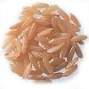
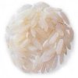
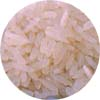
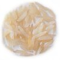
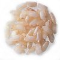
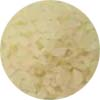
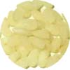
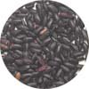
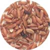
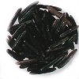

Что такое рис
 От ароматного индийского
пилафа, узбекского плова, до сливочного итальянского ризотто - рис
знаменит во всем мире. В нашей энциклопедии вы найдете путеводитель по
разновидностям риса, информацию о том, как их лучше готовить и вкусные
рецепты с этим незаменимым продуктом.
От ароматного индийского
пилафа, узбекского плова, до сливочного итальянского ризотто - рис
знаменит во всем мире. В нашей энциклопедии вы найдете путеводитель по
разновидностям риса, информацию о том, как их лучше готовить и вкусные
рецепты с этим незаменимым продуктом. В каждом маленьком растении содержится от 100 до 200 зернышек риса. Это зерновая культура, и как все крупы, в состоит из крахмала, то есть углеводов. Он делает рис очень питательным, так как он богат белками, витаминами, минералами и клетчаткой, легко переваривается. Однако, в отличие от других круп, в нем нет глютена, что делает его идеальным для больных целиакией или непереносимостью белков злаков.
Как и другие злаки, рис появился на нашей планете примерно десять тысяч лет назад, когда великие ледники растаяли и оставили за собой огромные болотистые пространства там, где сейчас находится Индия, Тайланд и Китай. Можно сказать, что с тех пор рис стал одним из основных продуктов у трех четвертей жителей во всем мире.
От Китая до Японии, включая Индию и Индонезию, рис - это больше, чем просто продукты. Это часть культуры и цивилизации в этих странах. Кроме всего рис считается подарком богов, символом плодородия и жизни. Этот символизм присутствует во многих средиземноморских странах, где существует традиция посыпания новобрачных рисом, желая им удачи и счастья.
Скорее всего, в западный мир рис привез Александр Великий после завоевания Индии в 350 г до нашей эры. Широкое распространение риса в средиземноморских странах считается благодаря арабской культуре, однако, ареологические раскопки показали, что рис использовали еще раньше, в 630 г до нашей эры. Считается, что рис был одним из продуктов, которыми торговали на рынках пряностей в Александрии, хотя он был заметно дешевле, чем перец.
В 1300 году рис впервые был упомянут в записях герцога Савойского в Пьемонте (Северной Италии). В XV веке рис упомянут в письме, написанном герцогом Миланским и к XVI веку Милан окружен рисовыми полями, блистающими на солнце. С веками выращивание риса распространилось на всю Ломбардию, Пьемонт и Венецию, и сегодня Италия - крупнейший поставщик риса в Европе.
На Филиппинах найдено более 10 тысяч сортов риса, из которых разведено более 5 тысяч. В Италии выращивается только 50 сортов.
Есть рис - значит правильно питаться. "Тот, кто предлагает рис, предлагает саму жизнь" сказал Будда, признавая питательные свойства риса, как признавали и многие другие древние культуры. Гиппократ заставлял древних олимпийцев есть рис до и после соревнований, готовя для них смесь eptasanei, состоящую из разных круп, воды и меда. Это не далеко ушло от того, что едят современные спортспемы, готовясь к соревнованиям.
Ученые подтвердили, что рис, как и другие углеводы, может исправить недостаток основных витаминов и минералов, вызванный употреблением излишних полуфабрикатов, повсеместно существующий в современном мире. В рисе содержится много витаминов группы B, также как и витамин Е и PP, а среди минералов, содержащихся в рисе, находятся кальций, медь, железо, калий, марганец, фосфор, магний, селен и цинк. И если этого не достаточно, в каждых 100 г сырого риса находится 4.1 г белка.
Мы предлагаем вам ознакомиться с сортами риса, а также узнать о том, как его варить, разнообразить и вкусно приготовить.
ДЛИННОЗЕРНЫЙ РИС
КОРИЧНЕВЫЙ НЕШЛИФОВАННЫЙ РИС

Нешлифованный рис, очищенный только от внешней несъедобной шелухи. Он называется коричневым, потому что в зернышках оставленa отрубевая оболочка, из-за которой рис приобретает коричневый цвет. Это самый полезный рис, так как в коричневом рисе больше всего клетчатки, минералов и витаминов, чем в белом рисе. К тому же он более ароматный и обладает немного другой текстурой. Ему необходимо больше воды при отваривании, и он готовится дольше белого риса (примерно, 40 мин).Рецепт: Рисовая запеканка из коричневого риса с маком
ДЛИННОЗЕРНЫЙ

Это один из самых популярных сортов риса. Отполированные зернышки белого цвета. Готовится либо способом впитывания, либо кипячения (см ниже).Рецепт: Рис, жаренный с тунцом
ЖАСМИНОВЫЙ РИС

Его еще называют "тайский ароматный рис". Он похож на басмати, но слегка ароматнее. Оба этих риса пышные и слегка липкие в сваренном виде. Он ароматнее белого риса. Подавайте с карри и восточными блюдами.Рецепт: Рис жасминовый по-тайски
РИС БАСМАТИ

Ароматный рис со слегка ореховым вкусом и текстурой. Он дороже простого длиннозерного риса. В основном используется в индийских блюдах, например, в пилаф. Перед тем, как варить басмати, его нужно промыть под холодной водой.Рецепт: Рис, жареный с курицей
КОРОТКОЗЕРНЫЙ (КРУГЛОЗЕРНЫЙ) РИС
РИЗОТТО ИЛИ АРБОРИО

Используется в основном в ризотто. Зернышки короткие и толстенькие, и когда их смешивают с горячим бульоном и постоянно помешивают, они выделяют крахмал, что придает ризотто необходимую консистенцию. Продается также под названиями виалоне (vialone) и карнароли (carnaroli). Зерна впитывают воды в пять раз больше своего веса и во время тепловой обработки выделяют клетчатку, благодаря которой блюда приобретают кремовую текстуру.Рецепт: Ризотто (основной метод)
ДЕСЕРТНЫЙ РИС

При тепловой обработке зернышки слипаются, поэтому десертный рис идеально подходит для сливочных десертов. Готовится 20-25 мин на плите и 1 - 1 1/2 часа в духовке.Рецепт: Рисовый пудинг
ВАЛЕНСИЯ ИЛИ ПАЭЛЬЯ

Маленькие зернышки, похожие на рис "ризотто". Специальный рис для паэльи - классического испанского блюда с морепродуктами.Рецепт: Паэлья с морепродуктами
НЕОБЫЧНЫЙ РИС
ЧЕРНЫЙ РИС

Существует две разновидности - нанкин и тайская. Последняя используется для черного рисового пудинга, восхитительного десерта из липкого риса с кокосовым молоком. Черный рис Нанкин из Китая и обладает слегка травяной текстурой: он идеально подходит для салатов и любых восточных блюд. Готовить 25-30 мин.Рецепт: Салат из мидий с рисом
РИС КРАСНЫЙ (CAMARQUE)

Этот рис выращивают в районе Камарки, в Южной Франции. Когда-то его считали сорняком. У него сильный ореховый аромат, и он хорошо подходит для салатов или на гарнир. Готовится 40-45 мин.Рецепт: Салат из помидоров с рисом
ДИКИЙ РИС

На самом деле это совсем не рис, а водяная трава, которую когда-то собирали только вручную, поэтому она была чрезвычайно дорогой. Сейчас дикий рис разводят, но он не потерял своего изысканного имиджа. Чтобы его длинные черные зерна распухли и появились белые зернышки в середине, рис нужно готовить 40-45 мин. Его можно купить в отдельных упаковках, или в сочетании с белым рисом, где дикий рис предварительно обработан, чтобы быстрее вариться (такое же время, как и длиннозерный рис). Если вы не пробовали его раньше, купите сначала дикий рис, смешанный с белым. Такая смесь очень красива на гарнир, а также в рисовых салатах.Рецепт: Хлеб с диким рисом, полентой и геркулесом
Как готовить длиннозернистый рис
| ВПИТЫВАНИЕМ 1. Чтобы приготовить рис этим способом, нужно измерить об'ем риса - отведите на каждую 1 часть риса по 2 части воды. Положить необходимое количество риса в мерный кувшин (для четырех человек вам понадобится 240-360 мл риса и 480-700 мл воды. 2. Положить рис в кастрюлю; залить водой. Приправить; довести до кипения. Плотно закрыть крышкой. Снизить огонь и готовить на минимальном огне 10-15 мин до готовности риса. Вся жидкость должна впитаться. Не поднимайте крышку слишком часто, чтобы не потерять пар. Перед тем, как подавать, нужно разрыхлить рис вилкой. | КИПЯЧЕНИЕМ 1. Взвесить необходимое количество риса; отведите по 50-75 гр на человека. Довести до кипения большую кастрюлю с подсоленной водой. 2. Добавить рис. Перемешать один раз вилкой; варить, не накрывая крышкой, 10-15 мин до мягкости. Слить, прополоскать кипятком из чайника. |
Рецепты с рисом
Помидоры фаршированные рисом и лососем
Рисовый суп с яйцами
Рис "Закрытый магазин"
Овощи с чили и рисом
Рис пряный индийский
Кулебяка с лососем и рисом из теста фило
Рисовые блинчики с фруктами
Сладкий рис с шафраном
Старомодный рисовый пудинг
Чем оживить простой вареный рис
Добавьте в кастрюлю с рисом одно из следующего:
Смотрите также Источник
Все о ризотто
10 блюд с рисом
10 блюд с рисовой мукой
Как отваривать рис (мастер-класс)
Как отваривать рис пилау (мастер-класс)
Как отваривать рис (3 способа)
2004 год объявлен международным годом риса Найдено самое старое зернышко риса (03/01/2004)